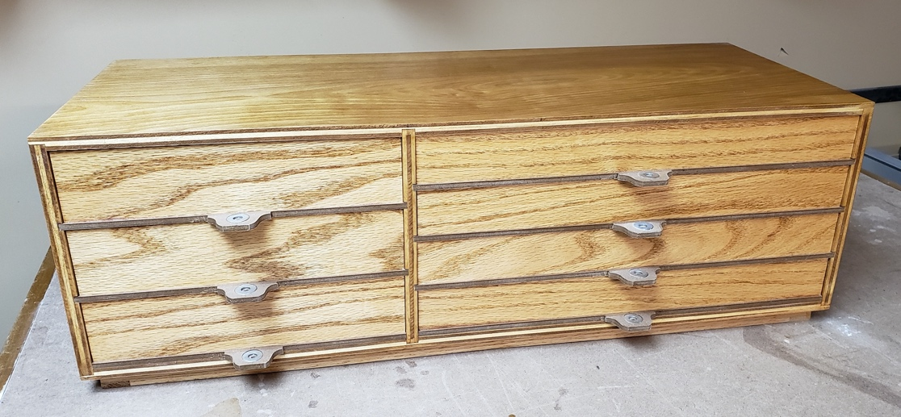
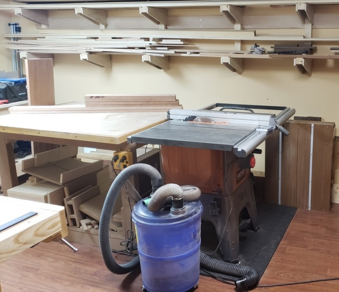

Essential Power Tools
Warning
This page is still under construction. Check again later.
The Table Saw
If I could only purchase one power tool for my workshop, it would be a table saw. The table saw is where much of my work takes place. I use the table saw to rough cut when dimensioning lumber, which only requires a quick run of a plane to remove the saw marks. And to square up the edge, rip stock to thickness, cut mitres, dadoes, finger joints, and cross-cutting with a sled. With a variety of jigs and blade options, table saws are extremely versatile.

Tip
If you don't have room for a table saw or can't afford one, then a skill saw or track saw is a viable alternative. Or the cheapest option of them all, the good old hand saw.
If money is no object and for the ultimate safety, a SawStop table saw (a patented braking system triggered when flesh touches the blade to prevent injury) is probably the best choice. For most, a decent nonportable table saw will suffice, especially when outfitted with a high-quality blade. I tried a few different, cheaper blades at the start and thought maybe my table saw wasn't good enough. However, once I switched to a Forrest Woodworker II blade, it became apparent that spending significantly more money for a quality saw blade was worth it. No more burn marks left by cuts, struggling to cut thick hardwood or tear out, the Forrest Woodworker II blade cuts effortlessly and cleanly. It doesn't cost a lot more for the Forrest blade if you consider it can be sharpened five times while most cheap blades can't be sharpened.

Dust Control
If you are using woodworking machines in your house, then it is best to consider a way to control dust. The relatively cheap and simple approach I've taken in my basement workshop is using a Shop Vac connected to a DustRIGHT Vortex controlled with a power controller. When I turn on my table saw or any other tools I have plugged into the controller, the vacuum is turned on as well and runs for five seconds after the power is turned off. The Vortex collects 90% of the saw dust which limits the amount the goes into the Shop Vac and into the air of the shop.
I bought additional hoses and adapters to connect to different tools (orbital sander, router table, bandsaw, plate joiner, and planer). Even with dust collection, there is still a significant amount of saw dust that escapes. My shop has a cold air return in it, so I put a filter over the vent to prevent air born saw dust from circulating through the house.
Machine Tools
-
Essential:
- Table saw (SawStop)
- Forrest Woodworker II blade
- Dado blade set (Forrest)
- Cordless drill
- Driver set
- Forstner bit set
- Drill bit set
- Shop Vac with DustRIGHT Vortex
- Table saw (SawStop)
-
Optional in order of importance:
- 12" Planer
- Drill Press -- great to rough out mortises
- Router with bit sets and router table
- Band saw -- go with a larger standing model resawing
- Orbital Sander
- Air compressor and nail guns and spray guns for finishing
- Plate joiner
- Compound mitre saw -- I use it primarily for rough cuts and trim work
- Jointer -- mine collects dust as it is a small Mastercraft model that's never worked very well, so I've worked out a decent process that eliminates the need for one